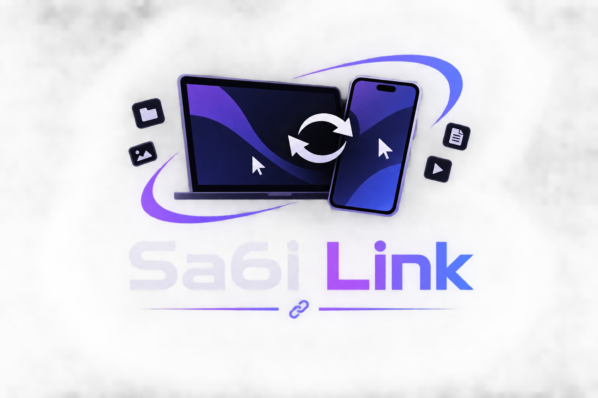

Private test rebrand · session handoff
One click copies a complete handoff prompt. Paste it into a new chat and the next session picks up exactly where this one stopped — no lost context.
Branch arena/b1010076-sa6i-link · Windows 7 x64 + OPPO A54 (Android 11) · private test, not a release